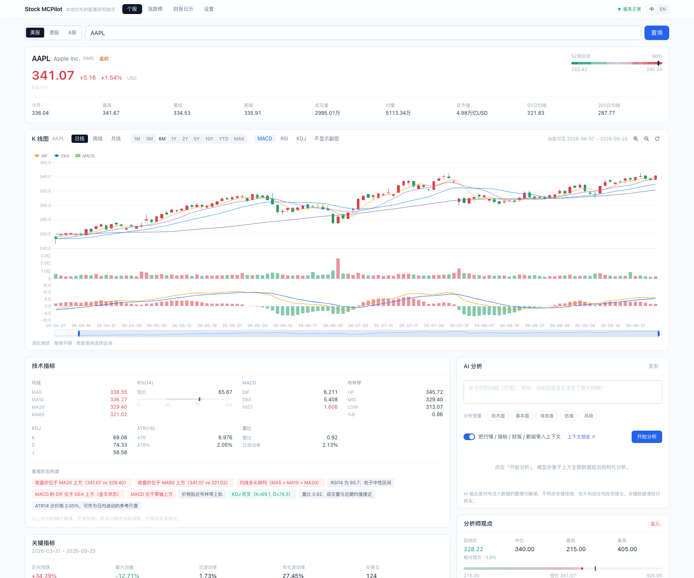
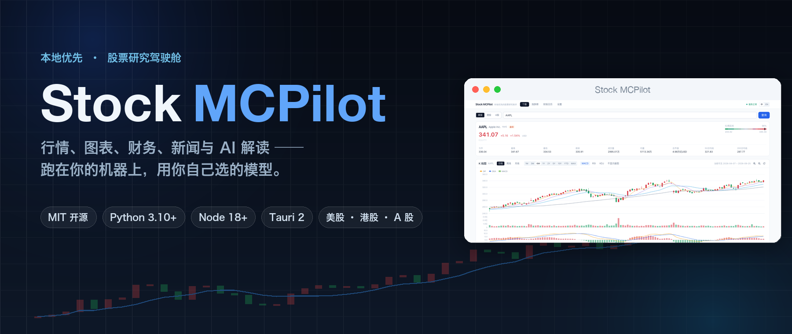
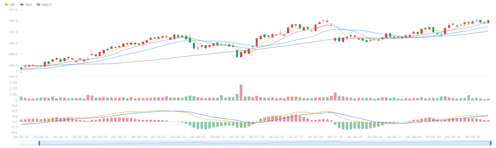
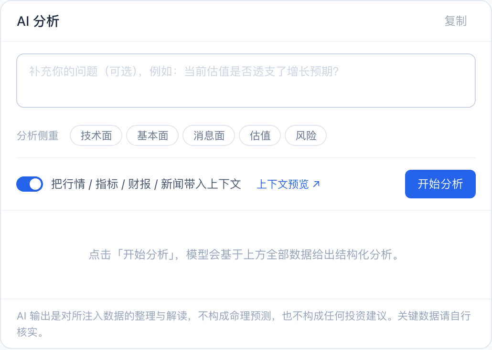
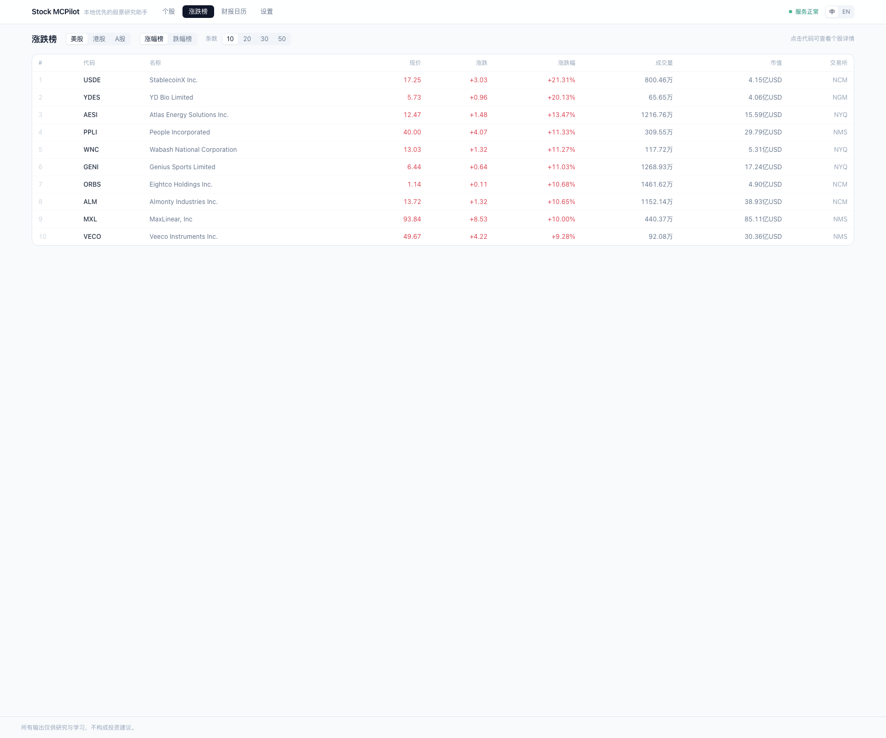
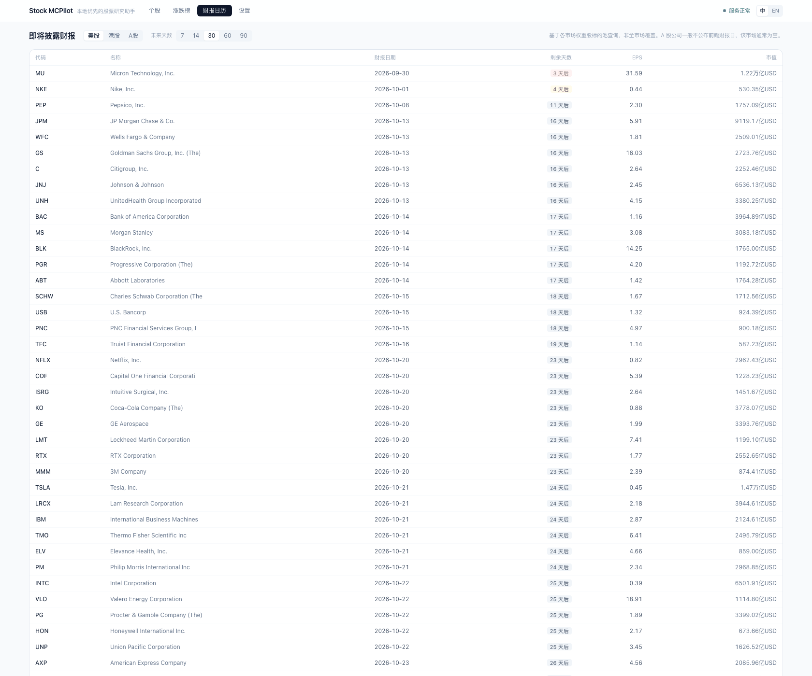
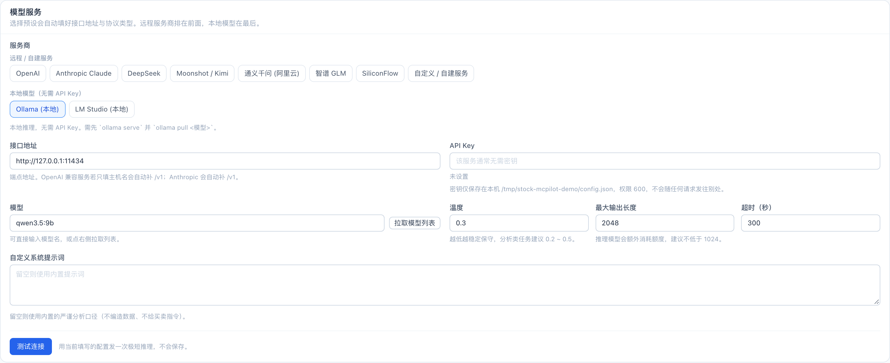

一个标的，一屏看全
输入代码或公司名 —— AAPL、0700、600519 —— 拿到完整画像：现价与涨跌、52 周区间位置、今开/最高/最低/昨收、成交量额、市值、50 日与 200 日均线，以及按各市场时区解析出的交易时段状态（盘前 / 交易中 / 午间休市 / 已收盘）。搜索覆盖美股、港股、A 股，中英文都能搜。
本地优先 · 股票研究驾驶舱
美股、港股、A 股的行情、图表、财务、新闻与 AI 解读，全部跑在你自己的机器上。
大多数「AI 炒股」工具要求你把持仓和 API Key 交给别人的服务器。Stock MCPilot 反过来：所有东西都在本地跑，密钥不出本机，模型由你指定 —— 云端 API（OpenAI、Anthropic、DeepSeek…）或你自己显卡上的本地模型（Ollama、LM Studio）。


功能
一个研究台该做的事，做扎实 —— 外加一个知道自己在发送什么的 AI 面板。
输入代码或公司名 —— AAPL、0700、600519 —— 拿到完整画像：现价与涨跌、52 周区间位置、今开/最高/最低/昨收、成交量额、市值、50 日与 200 日均线，以及按各市场时区解析出的交易时段状态（盘前 / 交易中 / 午间休市 / 已收盘）。搜索覆盖美股、港股、A 股，中英文都能搜。
K 线叠加 MA5/10/20/60 与布林带；成交量、MACD、RSI、KDJ 四个副图可独立开关；周期 1M…MAX × 粒度 1m…1mo 自由切换；放大 / 缩小 / 重置、滚轮缩放、拖拽平移、底部滑块选区间，并实时显示当前可见窗口。红涨绿跌 —— 中文市场真正在用的那套配色。
分市场列出涨幅榜与跌幅榜，可排序，带价格、涨跌额、成交量与市值。财报日历给出待披露时间、倒计时天数与 EPS 预期。A 股公司一般不公布前瞻财报日，该市场通常为空 —— 应用会直接说明这一点，而不是假装有数据。
技术指标每项都配一句人话解读（「收盘价位于 MA20 上方」「MACD 金叉」）；关键指标含区间涨跌、最大回撤、日与年化波动率；公司概况带估值、盈利能力、资产负债、分红、目标价与做空数据；再加年度 / 季度财报、EPS 与营收预期、评级分布、机构与内部人持股、近期新闻。
选分析侧重（技术面 / 基本面 / 消息面 / 估值 / 风险），也可以补一句你自己的问题。在发出任何请求之前，展开「将注入模型的内容」就能逐字阅读实际拼装出来的提示词。上下文由你正在看的同一批数据构成，每段可单独开关，并且有字符预算上限，不会一不小心撑爆模型的上下文窗口。回复流式返回、按 Markdown 渲染、一键复制。
8 个远程 / 自建预设（OpenAI、Anthropic Claude、DeepSeek、Moonshot / Kimi、通义千问、智谱 GLM、SiliconFlow、自定义），加上 Ollama 与 LM Studio 两个本地选项。选中预设后接口地址与协议自动填好。点「测试连接」会真的跑一个来回（列模型 加上 一次极短推理）—— 绿灯代表「真的能推理」，不只是「端口是通的」。
AI 输出是对所注入数据的解读，不是预测。内置系统提示词禁止编造数字，也不给买卖指令；界面上那句「所有数值均为机械计算，不构成预测」也是应用自己的措辞。这里没有任何内容构成投资建议。
界面
截图全部来自真实运行中的应用，中英界面各一套。点开任意一张可放大细看。





模型
云端 API 或你自己显卡上的本地模型。选中预设，接口地址与协议自动填好。
| 服务商 / 接口地址 | 模型示例 | 鉴权 |
|---|---|---|
| Anthropic Claude api.anthropic.com | claude-sonnet-5 | x-api-key |
| OpenAI api.openai.com/v1 | gpt-4o-mini | Bearer |
| DeepSeek api.deepseek.com/v1 | deepseek-chat | Bearer |
| Moonshot / Kimi api.moonshot.cn/v1 | moonshot-v1-8k | Bearer |
| 通义千问（阿里云） | qwen-plus | Bearer |
| 智谱 GLM | glm-4-flash | Bearer |
| SiliconFlow api.siliconflow.cn/v1 | Qwen/Qwen2.5-7B-Instruct | Bearer |
| 自定义 / 自建服务 | — | 任意 |
| Ollama 127.0.0.1:11434 · LM Studio 127.0.0.1:1234 | 已装模型名 | 无需 Key |
到 console.anthropic.com → API keys 创建一个密钥。
设置 → 模型服务 → 点 Anthropic Claude，地址与协议会自动填好。
界面里显示为 sk-a****wxyz，明文只存在本机。
它会真的跑一个来回，期望看到「连接与推理均正常（… ms）」，然后点保存。
ollama pull qwen3.5:9b 之后，在设置里点「拉取模型」直接选。默认地址 127.0.0.1:11434。推理模型（qwen3、deepseek-r1 等）会先花掉大量 token 写思维链，而这些 token 也计入「最大输出长度」—— 给得宽裕些。「测试连接」的探针用自己的固定预算（1024–4096），所以思考量特别大的模型可能出现「测试不过、但分析正常」。
本地优先
后端只监听回环地址，密钥只以掩码形式出现在接口里。这不是话术，是代码层面的约束。
~/.stock-mcpilot/config.json，目录权限 0700、文件权限 0600。sk-a****wxyz）和一个 api_key_set 布尔位。连异常信息都会检查是否夹带了密钥。python run.py --host 0.0.0.0 会被直接拒绝，除非显式加 --allow-remote —— 否则同局域网内任何人都能透过 /llm/chat 烧掉你的 API 额度。# 后端起来了吗 $ curl http://127.0.0.1:8000/health {"status":"ok","version":"0.2.0",...} # 密钥只在本机，接口只回掩码 ~/.stock-mcpilot/config.json mode 0600 # 想监听别的地址？默认会被拒绝 $ python run.py --host 0.0.0.0 refused: pass --allow-remote
上面这三行就是应用自己的实际行为，不是页面文案。
快速上手
两个终端、五条命令。没有发布安装包 —— 目前从源码跑，或者自己构建桌面应用。
| 环境 | 版本 | 用途 |
|---|---|---|
| Python | 3.10+ （推荐 3.11 / 3.12） | 后端 —— 必需 |
| Node.js | 18+ （推荐 20 LTS） | 网页界面 —— 必需 |
| Rust | 1.77+ stable | 桌面应用 —— 可选 |
| WebView2 / WebKitGTK | — | 仅桌面端：Windows / Linux |
克隆仓库，进入目录。
建一个虚拟环境，装 backend/requirements.txt。Windows 把激活脚本换成 .venv\Scripts\Activate.ps1。
默认在 127.0.0.1:8000；端口被占就加 --port 8001。
界面会轮询 /health，后端起来之后自动恢复连接。
设置 → 模型服务 → 选服务商 → 填 Key（或用本地模型）→ 测试连接 → 保存。
$ git clone https://github.com/lpeixin/stock-mcpilot.git $ cd stock-mcpilot $ python3 -m venv .venv $ source .venv/bin/activate $ pip install -r backend/requirements.txt $ python run.py # http://127.0.0.1:8000 # 另开一个终端 $ cd frontend $ npm install $ npm run dev # http://localhost:5173
akshare 是可选依赖里比较重的一个，只用于 A 股名称查询 —— 装不上也不影响使用，应用会优雅降级。
桌面版同一套代码可以构建（Tauri 2 + PyInstaller sidecar），最终用户完全不需要装 Python：bash scripts/build-sidecar.sh 再 npm run tauri build。
技术栈
测试不是「元素在不在」，而是行为断言：verify_ui.py 会检查点「放大」之后可见区间确实从 171 天缩到 110 天、K 线画布里同时存在红色和绿色像素、界面确实渲染成了你指定的语言。
常见问题
目前没有发布二进制安装包，仓库里也没有 Releases。想跑起来就按上面的五条命令从源码来；想要桌面窗口，就自己构建 Tauri 包（需要 Rust）。这条路更长，但产出是你自己能核对的东西。
行情来自公开的行情接口（yfinance，A 股名称走 akshare）；你的配置、密钥和本地缓存都只在本机。唯一会主动出去的是你点「开始分析」时拼装给模型的那段上下文 —— 而它在发送前可以逐字预览。
不必。Ollama 和 LM Studio 完全本地：不需要 API Key、不按 token 计费、数据不出本机。代价是小模型写出来的解读质量参差不齐，而且推理模型会先消耗大量 token 写思维链 —— 记得把「最大输出长度」给足。
美股、港股、A 股。搜索中英文都能用，交易时段状态按各市场自己的时区解析（盘前 / 交易中 / 午间休市 / 已收盘）。
因为 A 股公司一般不公布前瞻财报日。财报日历基于各市场权重股标的池查询，本来也不是全市场覆盖。应用选择直接说明这一点，而不是给你一屏看起来很像数据的空壳。
不是。技术指标那块的每一项都是机械计算，界面上写着「不构成预测」；AI 面板的内置系统提示词禁止编造数字、禁止给买卖指令。它省的是你翻数据、算指标、拼上下文的时间，不是替你决策。
因为中文市场用的就是这套。默认红涨绿跌，跟 A 股、港股行情软件一致 —— 不用你在心里做一次颜色换算。
行情、图表、财务、新闻都在一屏里；模型你选，密钥你留，代码你查。
MIT · v0.2.0 · Python 3.10+ · Node 18+ · 无安装包，从源码构建